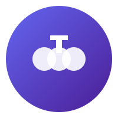

Trisolaris - Web3卡牌抽卡游戏
游戏流程
玩家游戏流程
Trisolaris提供简单直观的游戏体验，玩家只需几个步骤即可完成整个游戏流程。 下面是使用该应用的详细步骤：
步骤 1: 连接钱包
使用MetaMask钱包连接到游戏。确保您的钱包已设置为Monad测试网络。
提示: 您需要在MetaMask中添加Monad Testnet网络
步骤 2: 支付代币
点击"支付并抽卡"按钮，确认支付一定数量的Monad测试代币以开始游戏。
提示: 测试网代币可以从水龙头获取
步骤 3: 抽取卡片
支付成功后，系统将自动从10种无聊猿卡片中随机抽取3张卡片。
抽卡过程通过智能合约实现，保证公平性
步骤 4: 查看结果
系统将向您展示抽取的3张卡片。观察是否有三张相同的卡片。
抽到三张相同卡片的概率约为1/1000
步骤 5: 获取奖励
如果抽到三张相同的卡片，智能合约将自动向您的钱包发送奖励代币。
奖励将在几秒钟内自动发送，无需手动领取
步骤 6: 分享结果
在社交媒体上分享您的抽卡结果，通过特殊链接邀请朋友参与。
邀请朋友可以获得额外奖励和特殊卡片